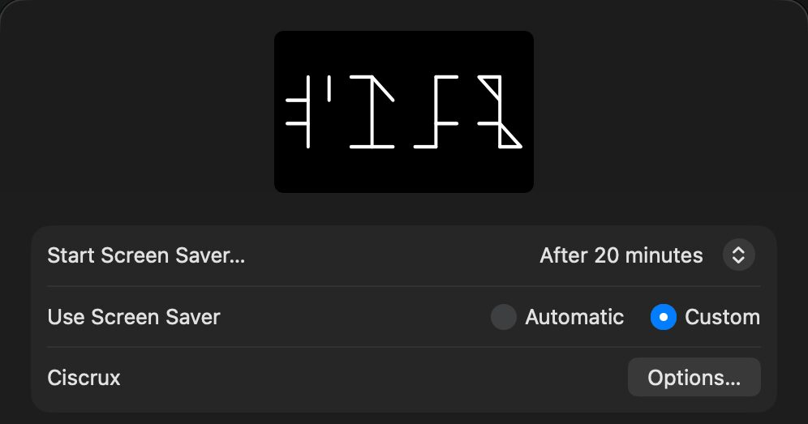

怎麼讀
四個角，一個數字。
每個符號是一條直線，四周最多有四個記號：右上是個位、左上是十位、右下是百位、左下是千位。所以一個符號就能寫出 1 到 9999 的任何數字。
十位
個位
千位
百位
Ciscrux 的日期寫成月和日（1113 是 11 月 13 日），時間寫成 24 小時制的時和分（1452 是 14 點 52 分）。
秒的符號
星期和月相，記在空著的角落。
秒只用得到上面兩個角，Ciscrux 就把下面兩個角也用上：右下記星期幾，左下記月相。打開 Show Hint 時，秒的左邊有一個小月亮表示月相，右邊則是當天的行星符號。
- 秒
- 星期
- 月相
星期右下角
- 一
- 二
- 三
- 四
- 五
- 六
- 日
星期一是 1、星期日是 7。一週七天自古就各對應一顆星：月亮、火星、水星、木星、金星、土星、太陽。
月相左下角
- 1
- 2
- 3
- 4
- 5
- 6
- 7
- 8
1 是新月、3 是上弦月、5 是滿月、7 是下弦月。月相由你的 Mac 依日期算出來。
照你的喜好調整
選項，先在這裡試試。
這些是 Ciscrux 選項視窗裡的設定，預覽會跟著即時改變。選項視窗目前只有英文，這裡照畫面上的名稱列出。在 Mac 上，到螢幕保護程式設定裡選 Ciscrux，再按「選項⋯」。
在 Mac 上
整個螢幕，一座安靜的時鐘。
排成一列，或分成兩列。以下是在 Mac 上實際執行 Ciscrux 錄下的畫面，開著 Show Hint。
安裝
三個步驟，最後到「背景圖片」裡選。
Ciscrux 已用 Developer ID 簽章，並經過 Apple 公證。
-
下載
下載 Ciscrux.zip，打開它。
-
安裝
雙擊 Ciscrux.saver。macOS 會問是否要安裝這個螢幕保護程式，按「安裝」。
-
選擇 Ciscrux
打開螢幕保護程式的設定，選 Ciscrux：
系統設定 › 背景圖片 › 螢幕保護程式⋯

找不到螢幕保護程式的設定？新版 macOS 的側邊欄裡沒有它：要打開「背景圖片」，再按下方的「螢幕保護程式⋯」。
舊版 macOS 則在「系統設定」（或「系統偏好設定」）裡找「螢幕保護程式」。
按 Ciscrux 旁邊的「選項⋯」，可以調整要顯示的內容。
或用 Homebrew：brew install --cask vulcanshen/tap/ciscrux
資料不會離開你的 Mac。
Ciscrux 完全沒有連網的程式碼：不收集任何資料，只把選項存在你的 Mac 上。詳見隱私權政策。
免費。
可免費下載與使用：不用購買、不用訂閱，也不用註冊帳號。
為什麼叫「Ciscrux」？
熙篤會，加上十字。
cis- 取自 Cistercian（熙篤會），加上拉丁文的 crux，意思是「十字」；英文 the crux of the matter（問題的關鍵）用的也是這個字。Crux 同時也是南十字座的名字。
Ciscrux
免費的螢幕保護程式，支援 macOS 11 以上，Apple 晶片與 Intel 都能用。
下載 Mac 版或用 Homebrew：brew install --cask vulcanshen/tap/ciscrux